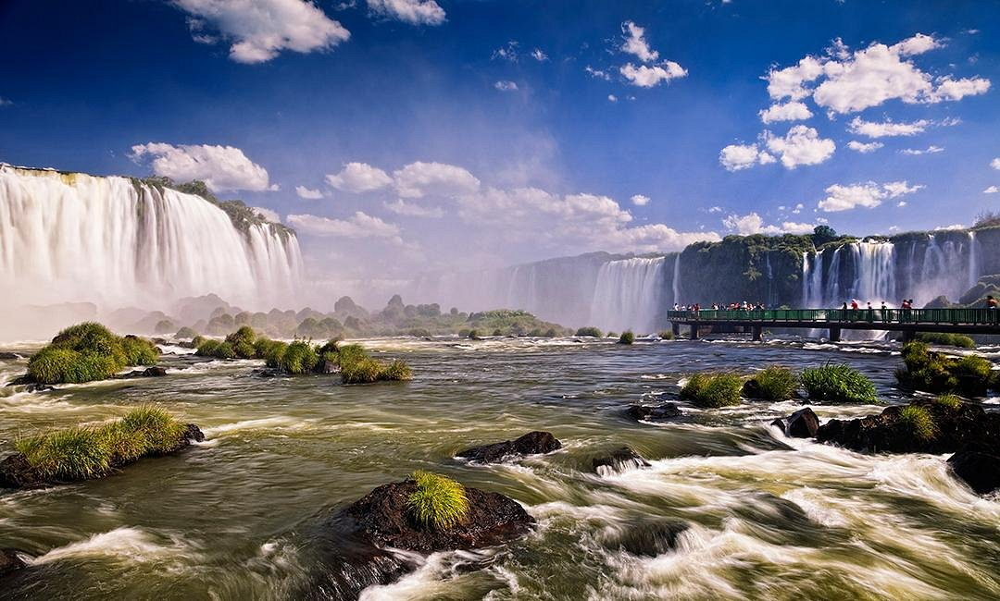

Catraratas do Iguaçu uma das maravilhas do mundo
Fomos a esse incrivel Lugar na formatura de 9ºAno.
Locais e seus encantos.
Fomos a esse incrivel Lugar na formatura de 9ºAno.
Colégio Estadual São Sebastião, escola que estou atualmente estudando. .
Liga Arena,Estadio situado em Curitiba, Fui com a escola pois o Diretor avia cido convidado pelo próprio dono do estádio.

O Jardim Botânico de Curitiba, fui neste local com minha primeira escola quando ainda tinha apenas 6 Anos de idade. .